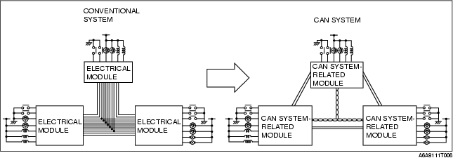

Vehicle can system
• By rearranging the multiple signal, common information between the CAN system-related modules is transmitted and received through the multichannel.
• The signal transmitted by one CAN system-related module is sent through the multichannel to all the CAN system-related modules, but only the concerned module(s) receives the signal and performs the appropriate operation (ex. light illumination, fan operation).
